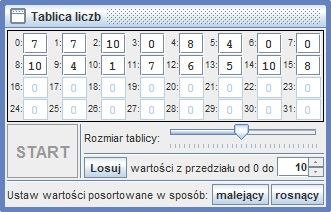

Zanim przejdziemy do nauki rekurencji, warto byłoby bliżej zapoznać się ze strukturą tej aplikacji. Jak już wcześniej było powiedziane ta aplikacja jest dość nietypowa, gdyż pozwoli Ci na próbę napisania własnych programów. Właśnie dlatego w tym miejscu dobrze byłoby abyś zaimplementował jakiś prosty algorytm. Dla wprowadzenie spróbuj zrealizować algorytm wyszukiwania maksymalnego elementu w tablicy.
Oprócz normalnych komend języka w niektórych lekcjach będą pojawiały się tzw. "funkcje specjalne", które będą integrować Twój program z otoczeniem. Pewnie zauważyłeś, iż oprócz tego okna (z treścią zadania) w aplikacji pojawiło się także drugie okno z tablicą liczb:

To właśnie na tej tablicy powinien działać twój program. Oczywiście w tym celu w swoim programie powinieneś skorzystać funkcji specjalnej:
Funkcja jest dokładnie omówiona w zakładce "funkcje specjalne".
Przed rozpoczęciem zadania należy zapoznać się ze specyfikacją zadania, znajdującą się w zakładce pod tym samym tytułem.